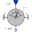

RelativeSensorMeasure relative kinematic quantities between two frame connectors |
Diagram
{kind=link}
Information
This information is part of the Modelica Standard Library maintained by the Modelica Association.
Relative kinematic quantities between frame_a and frame_b are determined and provided at the conditional output signal connectors. For example, if parameter "get_r_rel = true", the connector "r_rel" is enabled and contains the relative vector from frame_a to frame_b. The following quantities can be provided as output signals:
- Relative position vector (= r_rel)
- Relative velocity vector (= v_rel)
- Relative acceleration vector (= a_rel)
- Three angles to rotate frame_a into frame_b (= angles)
- Relative angular velocity vector (= w_rel)
- Relative angular acceleration vector (= z_rel)
Via parameter resolveInFrame it is defined, in which frame a vector is resolved (before differentiation):
| resolveInFrame = Types.ResolveInFrameAB. | Meaning |
|---|---|
| world | Resolve vectors in world frame |
| frame_a | Resolve vectors in frame_a |
| frame_b | Resolve vectors in frame_b |
| frame_resolve | Resolve vectors in frame_resolve |
If resolveInFrame = Types.ResolveInFrameAB.frame_resolve, the conditional connector "frame_resolve" is enabled and the vectors are resolved in the frame, to which frame_resolve is connected. Note, if this connector is enabled, it must be connected.
In the following figure the animation of a RelativeSensor component is shown. The light blue coordinate system is frame_a, the dark blue coordinate system is frame_b, and the yellow arrow is the animated sensor.
Note, derivatives of relative kinematic quantities are always performed with respect to the frame, in which the vector to be differentiated is resolved. After differentiation, it is possible via parameter resolveInFrameAfterDifferentiation (in the "Advanced" menu) to resolve the differentiated vector in another frame.
For example, if resolveInFrame = Types.ResolveInFrameAB.frame_b, then
r_rel = resolve2(frame_b.R, frame_b.r_0 - frame_a.r0); v_rel = der(r_rel);
is returned (r_rel = resolve2(frame_b.R, frame_b.r_0 - frame_a.r0)), i.e., the derivative of the relative distance from frame_a to frame_b, resolved in frame_b. If resolveInFrameAfterDifferentiation = Types.ResolveInFrameAB.world, then v_rel is additionally transformed to:
v_rel = resolve1(frame_b.R, der(r_rel))
The cut-force and the cut-torque in frame_resolve are always zero, whether frame_resolve is connected or not.
If get_angles = true, the 3 angles to rotate frame_a into frame_b along the axes defined by parameter sequence are returned. For example, if sequence = {3,1,2} then frame_a is rotated around angles[1] along the z-axis, afterwards it is rotated around angles[2] along the x-axis, and finally it is rotated around angles[3] along the y-axis and is then identical to frame_b. The 3 angles are returned in the range
-p <= angles[i] <= p
There are two solutions for "angles[1]" in this range. Via parameter guessAngle1 (default = 0) the returned solution is selected such that |angles[1] - guessAngle1| is minimal. The relative transformation matrix between frame_a and frame_b may be in a singular configuration with respect to "sequence", i.e., there is an infinite number of angle values leading to the same relative transformation matrix. In this case, the returned solution is selected by setting angles[1] = guessAngle1. Then angles[2] and angles[3] can be uniquely determined in the above range.
The parameter sequence has the restriction that only values 1,2,3 can be used and that sequence[1] ≠ sequence[2] and sequence[2] ≠ sequence[3]. Often used values are:
sequence = {1,2,3} // Cardan or Tait-Bryan angle sequence
= {3,1,3} // Euler angle sequence
= {3,2,1}
Parameters (11)
| animation |
Value: true Type: Boolean Description: = true, if animation shall be enabled (show arrow) |
|---|---|
| resolveInFrame |
Value: Modelica.Mechanics.MultiBody.Types.ResolveInFrameAB.frame_a Type: ResolveInFrameAB Description: Frame in which vectors are resolved before differentiation (world, frame_a, frame_b, or frame_resolve) |
| get_r_rel |
Value: false Type: Boolean Description: = true, to measure the relative position vector from the origin of frame_a to frame_b |
| get_v_rel |
Value: false Type: Boolean Description: = true, to measure the relative velocity of the origin of frame_b with respect to frame_a |
| get_a_rel |
Value: false Type: Boolean Description: = true, to measure the relative acceleration of the origin of frame_b with respect to frame_a |
| get_w_rel |
Value: false Type: Boolean Description: = true, to measure the relative angular velocity of frame_b with respect to frame_a |
| get_z_rel |
Value: false Type: Boolean Description: = true, to measure the relative angular acceleration of frame_b with respect to frame_a |
| get_angles |
Value: false Type: Boolean Description: = true, to measure the 3 rotation angles |
| sequence |
Value: {1, 2, 3} Type: RotationSequence Description: If get_angles=true: Angles are returned to rotate frame_a around axes sequence[1], sequence[2] and finally sequence[3] into frame_b |
| guessAngle1 |
Value: 0 Type: Angle (rad) Description: If get_angles=true: Select angles[1] such that abs(angles[1] - guessAngle1) is a minimum |
| resolveInFrameAfterDifferentiation |
Value: resolveInFrame Type: ResolveInFrameAB Description: Frame in which vectors are resolved after differentiation (world, frame_a, frame_b, or frame_resolve) |
Inputs (3)
| arrowDiameter |
Default Value: world.defaultArrowDiameter Type: Diameter (m) Description: Diameter of relative arrow from frame_a to frame_b |
|---|---|
| arrowColor |
Default Value: Modelica.Mechanics.MultiBody.Types.Defaults.SensorColor Type: Color Description: Color of relative arrow from frame_a to frame_b |
| specularCoefficient |
Default Value: world.defaultSpecularCoefficient Type: SpecularCoefficient Description: Reflection of ambient light (= 0: light is completely absorbed) |
Connectors (9)
| frame_a |
Type: Frame_a Description: Coordinate system a |
|
|---|---|---|
| frame_b |
Type: Frame_b Description: Coordinate system b |
|
| frame_resolve |
Type: Frame_resolve Description: If resolveInFrame = Types.ResolveInFrameAB.frame_resolve, the output signals are resolved in this frame |
|
| r_rel |
Type: RealOutput[3] Description: Relative position vector frame_b.r_0 - frame_a.r_0 resolved in frame defined by resolveInFrame |
|
| v_rel |
Type: RealOutput[3] Description: Relative velocity vector |
|
| a_rel |
Type: RealOutput[3] Description: Relative acceleration vector |
|
| angles |
Type: RealOutput[3] Description: Angles to rotate frame_a into frame_b via 'sequence' |
|
| w_rel |
Type: RealOutput[3] Description: Relative angular velocity vector |
|
| z_rel |
Type: RealOutput[3] Description: Relative angular acceleration vector |
Components (14)
| relativePosition |
Type: RelativePosition |
|
|---|---|---|
| der1 |
Type: Der[3] |
|
| der2 |
Type: Der[3] |
|
| relativeAngles |
Type: RelativeAngles |
|
| relativeAngularVelocity |
Type: RelativeAngularVelocity |
|
| der3 |
Type: Der[3] |
|
| zeroForce1 |
Type: ZeroForceAndTorque |
|
| zeroForce2 |
Type: ZeroForceAndTorque |
|
| zeroForce3 |
Type: ZeroForceAndTorque |
|
|  | transformVector_v_rel |
Type: TransformRelativeVector |
| transformVector_a_rel |
Type: TransformRelativeVector |
|
| transformVector_z_rel |
Type: TransformRelativeVector |
|
| world |
Type: World |
|
| arrow |
Type: Arrow |
Used in Examples (5)
|
Modelica.Mechanics.MultiBody.Examples.Loops
Planar four bars mechanism with one kinematic loop (with RevolutePlanarLoopConstraint joint) |
|
|
Modelica.Mechanics.MultiBody.Examples.Constraints
Body attached by one spring and two prismatic joints or constrained to environment |
|
|
Modelica.Mechanics.MultiBody.Examples.Constraints
Body attached by one spring and revolute joint or constrained to environment |
|
|
Modelica.Mechanics.MultiBody.Examples.Constraints
Body attached by one spring and spherical joint or constrained to environment |
|
|
Modelica.Mechanics.MultiBody.Examples.Constraints
Body attached by one spring and universal joint or constrained to environment |